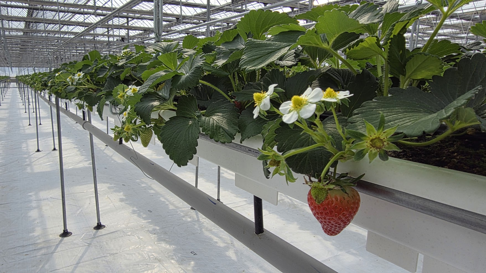

Product
Catalog
Smart-farm components — pipes & profiles, fittings & connectors, valves & filters, fasteners, rollers and materials.
2026
FIRMMIT Uzbekistan · global@firmmit.com · +998 99 850 4500 · A branch of Firmmit Korea (www.firmmit.kr)
Metal Pipe/Connector 48mm
Metall quvur/ulagich 48mm
Firmmit Uzbekistan
Metal Pipe/Connector 22mm
Metall quvur/ulagich 22mm
Firmmit Uzbekistan
Metal Pipe/Connector 32mm
Metall quvur/ulagich 32mm
Firmmit Uzbekistan
Bracket with Bearing 48mm
Podshipnikli kronshteyn 48mm
Firmmit Uzbekistan
Metal Disc/Flange 25mm
Metall disk/flanets 25mm
Firmmit Uzbekistan
Electric Space Heater
Elektr isitgich
Firmmit Uzbekistan
Fan Coil Unit (Elh WS, Heating/Cooling)
Fankoyl (isitish/sovutish)
Firmmit Uzbekistan
Pipe Clip Fastener
Quvur qisqichi
Firmmit Uzbekistan
Pipe Clip Fastener (Curved)
Quvur qisqichi (egri)
Firmmit Uzbekistan
Z-Shaped Metal Fastener
Z-shaklli metall mahkamlagich
Firmmit Uzbekistan
Pipe Clip Fastener 48mm
Quvur qisqichi 48mm
Firmmit Uzbekistan
Metal Clamp (Curved)
Metall xomut (egri)
Firmmit Uzbekistan
Metal Clip (Saddle) 48-50mm
Metall qisqich (egar) 48-50mm
Firmmit Uzbekistan
Metal Clip (Saddle) 25mm
Metall qisqich (egar) 25mm
Firmmit Uzbekistan
Metal Clip (Saddle) 32mm
Metall qisqich (egar) 32mm
Firmmit Uzbekistan
Metal Clip (Double-Prong) 22mm
Metall qisqich (ikki tishli) 22mm
Firmmit Uzbekistan
Metal Saddle Clamp with Bolts 50x20
Boltli metall egar xomut 50x20
Firmmit Uzbekistan
Metal Saddle Clamp with Bolts 48mm
Boltli metall egar xomut 48mm
Firmmit Uzbekistan
Turnbuckle (Hook Tensioner), Batch 2
Taranglagich (ilmoqli)
Firmmit Uzbekistan
Metal Clip (Red/White) 25mm
Metall qisqich (qizil/oq) 25mm
Firmmit Uzbekistan
Eye-Bolt Turnbuckle Clip 22mm
Kozli-bolt taranglagich qisqich 22mm
Firmmit Uzbekistan
Hook Clip with Eye Bolt 48mm
Kozli boltli ilmoq qisqich 48mm
Firmmit Uzbekistan
U-Bolt (Fastener), Batch 2
U-shaklli bolt (mahkamlagich)
Firmmit Uzbekistan
Flange Nut (Pack), Batch 4
Flanetsli gayka (toplam)
Firmmit Uzbekistan
Octagonal Flange (Cap) 32mm
Sakkiz qirrali flanets (qopqoq) 32mm
Firmmit Uzbekistan
Pipe Clip Fastener 32mm
Quvur qisqichi 32mm
Firmmit Uzbekistan
Black Tee Fitting
Qora troynik (fiting)
Firmmit Uzbekistan
Queen Elbow 30mm
Queen tirsak 30mm
Firmmit Uzbekistan
Queen Coupling 40mm
Queen mufta 40mm
Firmmit Uzbekistan
Queen Adapter 25mm (Male Thread)
Queen adapter 25mm (tashqi rezba)
Firmmit Uzbekistan
Queen Adapter 25mm (Batch 2)
Queen adapter 25mm
Firmmit Uzbekistan
Queen Tee 25mm
Queen troynik 25mm
Firmmit Uzbekistan
Queen Tee 30mm
Queen troynik 30mm
Firmmit Uzbekistan
Queen Elbow 20mm (Male Thread)
Queen tirsak 20mm (tashqi rezba)
Firmmit Uzbekistan
Queen Tee 40x40
Queen troynik 40x40
Firmmit Uzbekistan
Queen Elbow 25mm (Male Thread)
Queen tirsak 25mm (tashqi rezba)
Firmmit Uzbekistan
Plastic Disc/Flange (Petal-Shaped) 25mm
Plastik disk/flanets (gulbargsimon) 25mm
Firmmit Uzbekistan
Plastic clip 48mm
Plastik qisqich 48mm
Firmmit Uzbekistan
Plastic clip 25mm
Plastik qisqich 25mm
Firmmit Uzbekistan
Plastic clip 32mm
Plastik qisqich 32mm
Firmmit Uzbekistan
Plastic Clamp Fitting with Bolts and Barb 48mm
Boltli plastik xomut fiting 48mm
Firmmit Uzbekistan
Plastic Y-Branch Clamp Fitting 48mm
Plastik Y-tarmoqli xomut fiting 48mm
Firmmit Uzbekistan
Ball Valve 20mm
Sharli kran 20mm
Firmmit Uzbekistan
Ball Valve 20mm x 3/4"
Sharli kran 20mm x 3/4"
Firmmit Uzbekistan
Ball Valve 25mm (Batch 2)
Sharli kran 25mm
Firmmit Uzbekistan
Ball Valve 50mm (2")
Sharli kran 50mm (2")
Firmmit Uzbekistan
Ball Valve 30mm x 1 1/4"
Sharli kran 30mm x 1 1/4"
Firmmit Uzbekistan
AMIAD Filter/Valve
AMIAD filtr/klapan
Firmmit Uzbekistan
Queen Reducer 40x25
Queen otkazgich 40x25
Firmmit Uzbekistan
Queen Tee 30x20
Queen troynik 30x20
Firmmit Uzbekistan
Queen Coupling 50mm
Queen mufta 50mm
Firmmit Uzbekistan
Queen Reducer Elbow 50x20
Queen otkazgich-tirsak 50x20
Firmmit Uzbekistan
Queen Coupling 25mm
Queen mufta 25mm
Firmmit Uzbekistan
Queen Elbow 50mm (Threaded)
Queen tirsak 50mm (rezbali)
Firmmit Uzbekistan
Queen Coupling 20mm
Queen mufta 20mm
Firmmit Uzbekistan
Queen Coupling 30mm
Queen mufta 30mm
Firmmit Uzbekistan
Queen Coupling 20mm (Batch 2)
Queen mufta 20mm
Firmmit Uzbekistan
Queen Elbow 40mm
Queen tirsak 40mm
Firmmit Uzbekistan
Queen Tee 50mm
Queen troynik 50mm
Firmmit Uzbekistan
Queen Tee 50x20
Queen troynik 50x20
Firmmit Uzbekistan
Queen Elbow 30mm (Batch 2)
Queen tirsak 30mm
Firmmit Uzbekistan
Ball Valve 50mm (Batch 2)
Sharli kran 50mm
Firmmit Uzbekistan
PVC Union Ball Valve A-SUNG (Boxed)
PVC Union Sharli kran A-SUNG (Boxed)
Firmmit Uzbekistan
Plastic Roller/Pulley (Green, with Bracket)
Plastik rolik/galtak (yashil)
Firmmit Uzbekistan
Cast Pulley Block (Green)
Quyma galtak bloki (yashil)
Firmmit Uzbekistan
Green Hook Holder with Bolt (Straight)
Yashil ilmoq ushlagich (boltli)
Firmmit Uzbekistan
Green Hook Holder (Bent Rod)
Yashil ilmoq ushlagich (egri)
Firmmit Uzbekistan
Elephant-Drip Tape, Roll
Elephant-Drip tomchilatib lentasi, rulon
Firmmit Uzbekistan
Tape (Turquoise), Roll
Lenta (feruza), rulon
Firmmit Uzbekistan
Woven Fastening Strap 20mm, 500m (Box, 9 boxes)
Toqilgan mahkamlash tasmasi 20mm,
Firmmit Uzbekistan
Greenhouse Film (Box)
Issiqxona plyonkasi (quti)
Firmmit Uzbekistan
Tapes (Assorted Bundle)
Tapes (Assorted Bundle)
Firmmit Uzbekistan